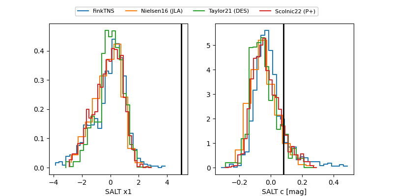

FINK: ZTF25abpfauo
Lasair: ZTF25abpfauo
ALeRCE: ZTF25abpfauo
TNS: 2025xga
YSE: 2025xga
ZTF25abpfauo (ztf,fink)
2025xga (tns,yse)
equatorial (ra, dec) = (130.4635,+16.26556)
galactic (l, b) = (209.8066,+31.57360)

last ztfr=19.21
16 ztfr detections